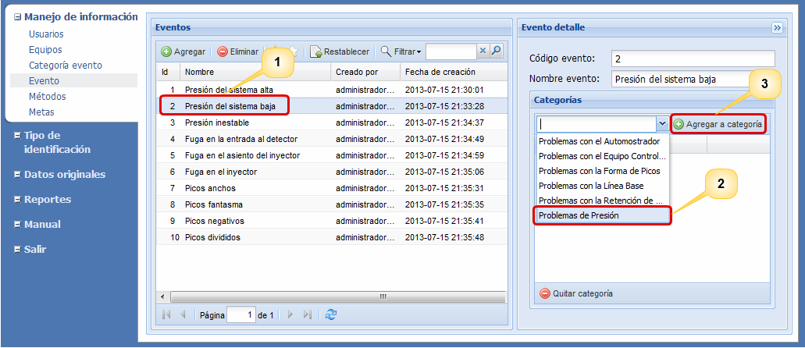
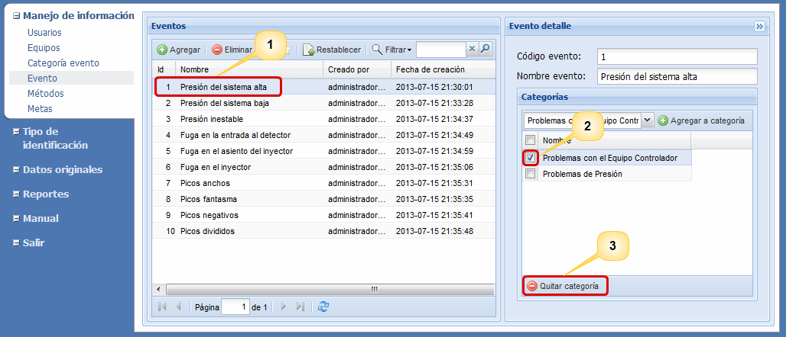

Agregar
evento
Para agregar un evento
pulse el botón Agregar,
digite el nombre del nuevo evento
en la fila que aparece en la parte superior de la lista y pulse
el botón Guardar.
Actualizar
Para actualizar un evento
de doble click sobre
el evento
que desea modificar, edite el nombre y pulse el botón
Guardar, el sistema le
preguntará porque razón desea
actualizar esta información, digite la razón y pulse el botón Aceptar. Luego
el sistema le mostrará un breve mensaje en el que informa
del éxito de la actualización.
Eliminar
Para eliminar un evento,
seleccione de la lista de eventos el
evento que desea eliminar y pulse el botón Eliminar,
el
sistema desplegará una pequeña ventana donde le preguntará
si realmente
desea eliminar el evento
y porque razón desea eliminarlo, digite la
razón y pulse el botón Aceptar.
Luego el sistema le mostrará un breve mensaje en el que
informa del éxito de la eliminación.
Restablecer
Bajo el supuesto de que usted haya eliminado un evento
sin
querer, usted tiene la posibilidad de recuperar la
información seleccionando la opción para ver los eventos
eliminados (estrella blanca), seleccione de la lista el evento
que desea recuperar y pulse el botón Restablecer, el sistema
le preguntará porque razón desea restablecerlo,
digite la razón y pulse el botón
Aceptar. Luego el
sistema le mostrara un breve mensaje en el que informa si se
ha restablecido con éxito.
Agregar a categoría
Los eventos pueden ser agrupados en categorías de acuerdo a la
causa
que los origina, por ejemplo todos los eventos que tratan sobre
fugas
(en filtros, en bombas, de entrada, etc.) forman una categoría.
Para agregar un evento a una categoría, seleccione el evento
(1) y en el formulario que hay en el lado derecho
seleccione la categoría (2) y pulse
el botón Agregar a categoría (3),
tal y como se evidencia en la Figura 2. Una vez realizados
los anteriores pasos, el sistema mostrará un mensaje que informa
del éxito de la operación.

Figura 2. Pantalla para agregar una
categoría a un evento.
Quitar categoría
Hace referencia a quitar un evento de una categoría. Para
llevar a cabo este proceso, seleccione un
evento de la lista (1), seleccione de la lista de categorías que
hay al lado derecho
la categoría que desea eliminar (2) y pulse el botón de Quitar
categoría (3), tal y como se evidencia en la Figura 3.

Figura 3 Pantalla para quitar una
categoría de un evento.